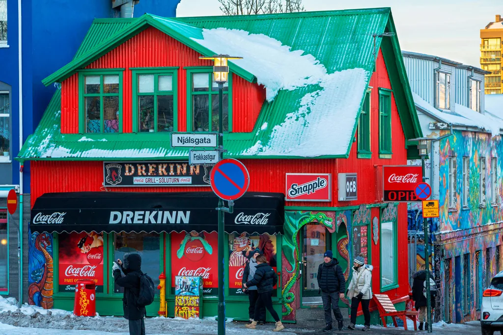
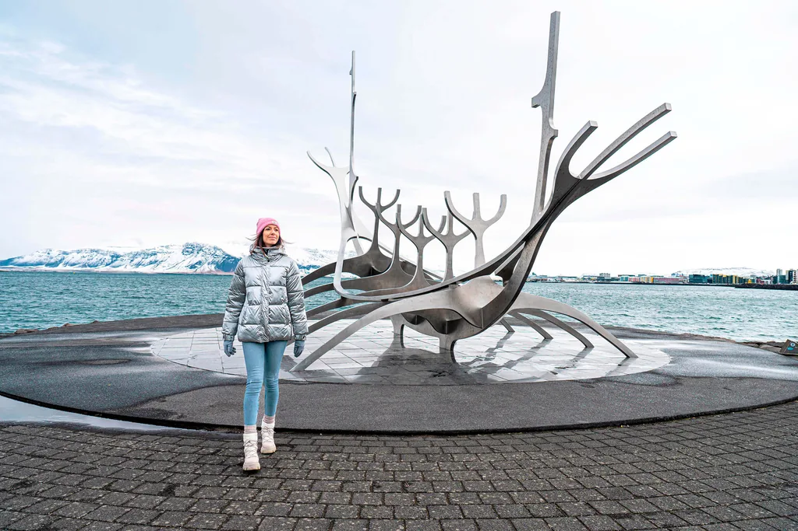
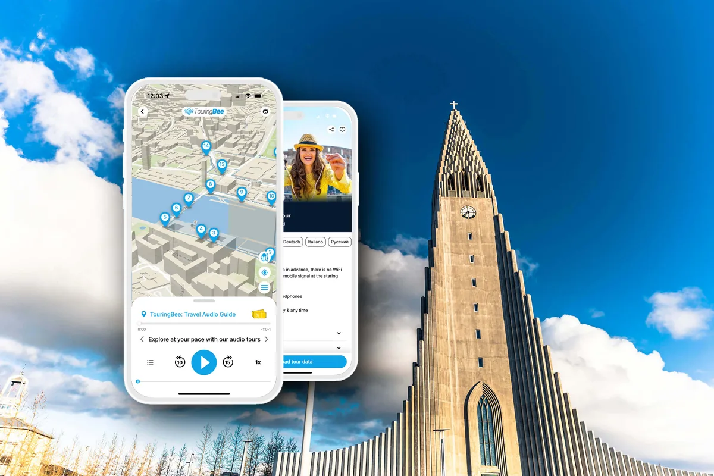

Reykjavík › Nordlichter
Nordlichter in Reykjavík: wann der Himmel dunkel genug ist und wo man steht
Das Nordlicht lässt sich nicht buchen. Die Wolkenkarte lässt sich richtig herum lesen — und der Himmel dunkelt noch zwei Stunden weiter, nachdem die Vorhersage „dunkel“ gesagt hat.
Niemand kann Ihnen Nordlichter versprechen, und jede Seite, die es tut, verkauft etwas. Drei Dinge müssen zusammenkommen: ein ausreichend dunkler Himmel, ein klarer Himmel und Sonnenaktivität. Nur das Erste ist vorher bekannt — und die meisten Besucher lesen gerade das falsch, weil die Vorhersage, die sie benutzen, nicht bedeutet, wonach sie aussieht.
Das Nordlicht nimmt Ihre Nächte und gibt an den übersprungenen nichts zurück. Planbar sind die Tage, und um die Wintersonnenwende hat Reykjavík knapp vier Stunden Tageslicht. Unser TouringBee-Audiospaziergang dauert 2 bis 2,5 Stunden und passt selbst da hinein.
Auf dieser Seite geht es deshalb um die beiden Entscheidungen, die Ihnen gehören: wann Sie rausgehen und wo Sie sich hinstellen. Der Rest ist Wetter.
Auf einen Blick
- Saison
- Etwa Ende August bis Mitte April, sobald der Himmel dunkel genug wird
- Dunkelster Himmel
- Etwa 2. September bis 8. April — der Abschnitt mit echter astronomischer Nacht
- Das „Dark“ der Vorhersage
- Ende der bürgerlichen Dämmerung. Danach dunkelt es noch rund zwei Stunden
- Helles Nordlicht
- Zeigt sich in der Dämmerung, manchmal kurz nach Sonnenuntergang
- Schwaches Nordlicht
- Jede weitere Dämmerungsstunde hilft
- Wolkenkarte
- Weiß ist klarer Himmel, Grün ist Bewölkung — umgekehrt zur Erwartung
- Aktivitätsskala
- 0 bis 9, vom isländischen Wetterdienst für Mitternacht veröffentlicht
- Stadtnah
- Das Ufer bei Grótta auf Seltjarnarnes, etwa 10–15 Minuten mit dem Auto
- Einplanen
- Eine halbe Stunde, davon zwanzig Minuten Anpassung der Augen
- Touren
- Beweglichkeit unter der Wolkenkarte, dazu jemand, der sie den ganzen Abend liest
Die Vorhersage sagt „Dark“, während der Himmel noch dunkler wird
Der isländische Wetterdienst veröffentlicht eine Nordlichtseite mit Wolkenkarte, Aktivitätszahl und darunter einer Zeile für Reykjavík der Art Dark: 18:54 to 07:35. Es ist die nützlichste Zahl im Internet zu diesem Thema, und sie wird regelmäßig als „der Himmel ist jetzt schwarz“ gelesen. Das ist er nicht.
Die Zeile markiert das Ende der bürgerlichen Dämmerung — die Sonne 6° unter dem Horizont. Danach dunkelt der Himmel noch etwa zwei Stunden weiter, durch die nautische Dämmerung bis zur astronomischen Nacht, wenn die Sonne mehr als 18° tief steht und der Himmel gar nicht mehr leuchtet.
Was nicht heißt, dass Sie warten müssen. Ein helles Nordlicht ist in der Dämmerung bestens zu sehen, und in einer starken Nacht entdeckt man es kurz nach Sonnenuntergang. Was das Weiterdunkeln bringt, sind die schwachen Erscheinungen: jede vergangene Stunde macht einen blassen grauen Bogen leichter vom Himmel dahinter zu unterscheiden. Die Regel lautet also nicht „warten Sie auf die astronomische Nacht“, sondern „wenn noch nichts zu sehen ist, ist der Himmel nicht fertig, und dasselbe Nordlicht wird später besser sichtbar“.
Hier der 16. Oktober 2026 in Reykjavík, maßstabsgetreu:
Dieser Abstand bleibt die ganze Saison bei rund zwei Stunden und schrumpft im Hochwinter nicht: am 15. Dezember sind es zwei Stunden und acht Minuten, etwas mehr als im Oktober. In welchem Monat Sie auch kommen — das „Dark“ der Vorhersage ist der Anfang des nützlichen Fensters, nicht dessen Mitte.
Die Saison, und was die dunklen Monate wirklich bringen
Die übliche Antwort lautet „Ende August bis Mitte April“, und als Saison stimmt das ungefähr. Das Nordlicht ist sichtbar, sobald der Himmel dunkel genug und die Sonne aktiv ist, also in der dunklen Jahreshälfte.
Darunter liegt allerdings eine schärfere Zahl. Echte astronomische Nacht — Sonne mehr als 18° unter dem Horizont — gibt es in Reykjavík nur zwischen etwa dem 2. September und dem 8. April. Das ist nicht die Grenze der Saison: ein starkes Nordlicht Ende August zeigt sich problemlos vor der Dämmerung. Es ist die Grenze des dunkelsten Himmels, den eine schwache Erscheinung braucht.
| Monatsmitte | Untergang | „Dark“ | Dunkelster Himmel ab | Stunden dunkelster Himmel |
|---|---|---|---|---|
| September | 19:53 | 20:42 | 22:58 | 4 Std. 49 Min. |
| Oktober | 18:07 | 18:56 | 20:47 | 8 Std. 53 Min. |
| November | 16:27 | 17:27 | 19:24 | 11 Std. 37 Min. |
| Dezember | 15:29 | 16:47 | 18:56 | 12 Std. 54 Min. |
| Januar | 16:20 | 17:27 | 19:29 | 12 Std. 14 Min. |
| Februar | 18:01 | 18:53 | 20:44 | 9 Std. 53 Min. |
| März | 19:28 | 20:16 | 22:16 | 6 Std. 39 Min. |
Lesen Sie die rechte Spalte als Spielraum der Nacht, nicht als Versprechen. Der September verlangt, bis nach elf wach zu bleiben, bevor der Himmel am besten ist — einer starken Erscheinung früher am Abend ist das egal. Der Dezember gibt fast dreizehn Stunden, und das ist das eigentliche Argument für eine Reise im schlechtesten Wetter des Jahres. Es ist zugleich der Haken, denn genau von diesem Wetter wird Ihnen gleich die Wolkenkarte erzählen.
Das sind Werte für die Monatsmitte in Reykjavík, und sie verschieben sich um einige Minuten pro Tag. Schlagen Sie Ihr eigenes Datum nach, bevor Sie danach planen.

Grün bedeutet Wolken
Die Karte des Wetterdienstes zeigt die vorhergesagte Bewölkung. Weiße Flächen sind klarer Himmel. Grüne Flächen sind bewölkt. Auf einer Seite über grüne Lichter am Himmel führt das ständig in die Irre, und es zählt mehr als alles andere auf dem Bildschirm.
Darunter steht die Aktivitätsvorhersage, eine Zahl von 0 bis 9 für Mitternacht. Ein Blick lohnt, aber sie ist selten das, was Sie aufhält. Island liegt unter dem Polarlichtoval, weshalb hier in ruhigen Nächten Lichter erscheinen, in denen Südeuropa nichts sieht. Und wie stark eine Erscheinung auch ist: geschlossene Bewölkung verdeckt sie. Lesen Sie also zuerst die Wolken und danach die Zahl. Bewölkung ist allerdings lückenhaft und Vorhersagen sind ungefähr: ein helles Nordlicht kann eine Lücke finden.
Lesen Sie die Seite in dieser Reihenfolge: zuerst das Weiße, dann die Uhrzeit, dann die Zahl. Ist der ganze Südwesten grün, lautet die Frage nicht, ob das Nordlicht stark ist, sondern ob Sie bereit sind, dorthin zu fahren, wo die Karte weiß ist.
Nordlicht-Touren und Wintertouren
Eine Tour liest dieselbe Wolkenkarte und kann den ganzen Abend dorthin wechseln, wo es weiß ist — zu Fuß nach dem Abendessen geht das nicht.
Touren vergleichen Sehenswürdigkeiten ReykjavíkWo man sich stadtnah hinstellt
Für einen Versuch braucht es keine Tour. Es braucht Abstand von Straßenlaternen und freien Himmel, und Reykjavík ist klein genug, dass daraus ein kurzer Ausflug wird statt einer Expedition.
Grótta auf der Halbinsel Seltjarnarnes ist einer der besten Punkte, die man ohne Tour aus der Stadt erreicht. Mit dem Auto sind es etwa 10 bis 15 Minuten vom Zentrum — länger mit Bus und Fußweg, und zu Fuß allein deutlich länger — und der Blick aufs Meer ist frei. Für die Wartezeit gibt es ein kleines geothermales Fußbad, Kvika, mit etwa 39 °C. Zwei ehrliche Einschränkungen. Der Ort ist beliebt: rechnen Sie mit anderen Menschen, Autoscheinwerfern und etwas Schein aus den nahen Straßen. Und der Damm hinüber zur Leuchtturminsel ist tidenabhängig, läuft schnell voll, und Besucher wurden dort schon abgeschnitten. Schauen Sie vom Ufer aus, wo die Aussicht ohnehin ist.
Näher dran ist die nach Norden gerichtete Uferpromenade in einer starken Nacht ein brauchbarer Ersatz: das Meer auf der einen Seite, die Lichter der Stadt im Rücken. Es ist derselbe Abschnitt, dem der Rundgang tagsüber folgt, und damit der am leichtesten zu findende dunklere Platz für Neuankömmlinge. Eine schwache Erscheinung zeigt er Ihnen nicht — dafür müssen Sie die beleuchteten Straßen wirklich verlassen.
Wo immer Sie landen, bleibt die Disziplin gleich. Norden ist die übliche Blickrichtung, aber legen Sie sich nicht darauf fest: bei hoher Aktivität kann sich das Nordlicht über einen großen Teil des Himmels ziehen, direkt über Ihnen eingeschlossen. Geben Sie den Augen zwanzig Minuten, und wenn Sie die Vorhersage prüfen müssen, dimmen Sie den Bildschirm oder schalten Sie in den Nacht- oder Rotmodus statt eine Karte in voller Helligkeit zu öffnen. Mit bloßem Auge ist ein schwaches Nordlicht ein blasser grauer Bogen, den die meisten für eine Wolke halten — eine Kamera zeigt ihn grün, lange bevor Sie sicher sind, überhaupt etwas zu sehen.
Was eine Tour tatsächlich kauft
Vor allem Beweglichkeit unter einer Wolkenkarte. In einer Nacht, in der die Hauptstadt zu ist und neunzig Fahrminuten entfernt klarer Himmel steht, kann ein Bus dort sein und Sie nicht. Ein guter Anbieter bringt mehr als das Fahren. Er liest das örtliche Wetter im Lauf des Abends, ändert die Route, wenn sich die Vorhersage dreht, weiß, welche Haltebuchten im Dunkeln sicher sind, und hilft zu einem brauchbaren Foto. Nichts davon garantiert ein Nordlicht, und wer anderes behauptet, verkauft zu viel.
Vergleichen Sie zwei Touren, die gleich aussehen, lohnt der Blick auf den zweiten Versuch: viele Anbieter lassen Sie kostenlos wiederkommen, wenn sich nichts zeigt, und die Bedingungen unterscheiden sich. Das, nicht das Foto im Angebot, ist der Unterschied.
Und das ehrliche Gegenargument: Wenn Sie mehrere Winternächte in Reykjavík sind, können Sie jede Nacht umsonst hinausschauen, und über vier Nächte stehen Ihre Chancen besser als bei einer einzelnen Tour. Die Tour lohnt, wenn die Nächte knapp sind — oder wenn die Stadt zu ist und die Karte sagt, das nächste Tal ist es nicht.
Drei Nächte
Wenn die Karte weiß und die Zahl niedrig ist
Trotzdem hinausgehen. Island liegt nördlich genug, dass mäßige Aktivität unter klarem Himmel etwas zeigen kann, auch wenn viele solcher Nächte nichts ergeben. Grótta, zwanzig Minuten Anpassung, eine halbe Stunde Geduld — es kostet Sie einen Abend, den Sie ohnehin hier verbringen.
Wenn Grün über dem ganzen Südwesten liegt
Das ist die Nacht, in der man Beweglichkeit kauft oder ins Bett geht. In der Wolke zu stehen verbessert nichts, und eine Tour, die zwei Stunden in ein klares Tal fährt, tut das Einzige, was möglich ist.
Wenn Sie eine Nacht haben und es September ist
Prüfen Sie die Aktivitätsvorhersage, bevor Sie die Uhrzeit festlegen. Deutet sie auf einen starken Abend und ist der Himmel klar, gehen Sie, sobald der Himmel seine Helligkeit verloren hat: eine kräftige Erscheinung wartet nicht auf Mitternacht. Sieht die Aktivität mäßig aus, ist der Himmel nach etwa elf am dunkelsten — essen Sie spät und nutzen Sie die zweite Hälfte des Abends.
Der Audioguide
Das Nordlicht entscheidet über Ihre Nächte. Über die Tage entscheiden Sie — und im Hochwinter sind das etwa vier Stunden.

TouringBee Audioguide Reykjavík
- Passt in einen vierstündigen Wintertag, mit Tageslicht auf beiden Seiten
- Funktioniert vollständig offline — unterwegs sind keine mobilen Daten nötig
- Im eigenen Tempo. Nützlich, wenn das Wetter den Zeitplan macht und nicht Sie
- Einmal zahlen. Keine Gruppe, keine Abfahrtszeit, niemand, der wartet
Sechs Fehler
- Beim „Dark“ der Vorhersage aufgeben. Das ist das Ende der bürgerlichen Dämmerung, nicht das Ende der Nacht. Zeigt sich nichts, hat der Himmel noch zwei Stunden zu dunkeln.
- Grün für gut halten. Auf der Karte des Wetterdienstes ist Grün Bewölkung. Weiß ist die Farbe, die Sie wollen.
- Die Aktivitätszahl vor der Wolkenkarte lesen. Geschlossene Bewölkung verdeckt jede Erscheinung, egal wie stark. Erst klarer Himmel, dann die Zahl.
- Die Vorhersage bei voller Helligkeit prüfen. Zwanzig Minuten Anpassung, zunichtegemacht von einer hellen Karte. Dimmen oder Nachtmodus.
- Im Dunkeln zum Leuchtturm von Grótta laufen. Der Damm ist tidenabhängig und läuft schnell voll. Das Ufer hat dieselbe Aussicht und bleibt, wo es ist.
- Nur nach Norden starren. Das ist die übliche Richtung, aber eine starke Erscheinung kann weite Teile des Himmels bedecken, auch den Zenit.
Häufige Fragen
Wann kann man in Reykjavík Nordlichter sehen?
Etwa von Ende August bis Mitte April, immer dann, wenn der Himmel dunkel genug und die Sonne aktiv ist. Die dunkelsten Nächte liegen in einem engeren Fenster: echte astronomische Nacht — die Sonne mehr als 18° unter dem Horizont — gibt es in Reykjavík nur von etwa 2. September bis 8. April. Außerhalb davon zeigt sich ein helles Nordlicht weiterhin vor der Dämmerung, ein schwaches wird deutlich schwieriger.
Was bedeutet die Zeit „Dark“ in der isländischen Vorhersage?
Sie markiert das Ende der bürgerlichen Dämmerung. Am 16. Oktober 2026 nannte der Wetterdienst Dunkelheit ab 18:54, doch die Sonne stand erst um 20:47 mehr als 18° unter dem Horizont, fast zwei Stunden später. So lange müssen Sie nicht warten, denn ein helles Nordlicht zeigt sich in der Dämmerung. Wirkt der Himmel zur ersten Zeit aber leer, lohnt das Bleiben: dieselbe Erscheinung wird im Lauf des Abends besser sichtbar.
Sieht man Nordlichter auch aus Reykjavík heraus?
Ja, in einer starken Nacht, und das kommt vor. Stadtlicht hebt die Schwelle: ein schwaches Nordlicht, das bei Grótta deutlich wäre, kann aus einer beleuchteten Straße unsichtbar bleiben. Üblich ist, an einen dunklen Rand der Stadt zu gehen, den Augen zwanzig Minuten zu geben und erst dann zu entscheiden, dass der Himmel leer ist.
Ist Grün auf der Karte gut oder schlecht?
Schlecht. Auf der Karte des isländischen Wetterdienstes bedeutet Grün Bewölkung und Weiß klaren Himmel — das Gegenteil dessen, was auf einer Seite über grüne Lichter fast alle annehmen. Suchen Sie zuerst das Weiße und schauen Sie erst danach auf die Aktivitätszahl, wobei Bewölkung ungleichmäßig ist und ein helles Nordlicht eine Lücke finden kann.
Lohnen sich Nordlicht-Touren?
Ihr Hauptvorteil ist Beweglichkeit: Die Fahrerin oder der Fahrer kann den ganzen Abend dorthin wechseln, wo die Wolkenkarte weiß ist, und das ist oft die eigentliche Einschränkung. Eine gute Begleitung liest zudem das lokale Wetter, wählt sichere Halteplätze und hilft beim Fotografieren. Garantien gibt das alles nicht. Prüfen Sie beim Vergleich zweier ähnlicher Touren, ob ein zweiter Versuch kostenlos ist, falls sich nichts zeigt: viele Anbieter bieten das an, nicht alle.
Wie lange sollte man draußen warten?
Mindestens eine halbe Stunde, und zwanzig Minuten davon den Augen zur Anpassung geben. Mit bloßem Auge ist ein Nordlicht oft blass und grau, bevor es heller wird. Wenn Sie die Vorhersage prüfen müssen, dimmen Sie den Bildschirm oder nutzen Sie den Nachtmodus statt einer Karte in voller Helligkeit.
Weiterlesen
- Reykjavík an einem Tag — was man mit dem Tageslicht macht, das das Nordlicht übrig lässt
- Sky Lagoon — Preise, Öffnungszeiten und wann man buchen sollte
- Hallgrímskirkja und der Turm — Tickets, Zeiten und die 16:45-Grenze
- Vom Flughafen Keflavík in die Stadt — Transfers und die Stunden vor dem Check-in
- Der komplette Reykjavík-Guide — der Spaziergang, die Ausflüge und die Jahreszeiten
- Alle Reykjavík-Guides
Kurz gefasst
Kommen Sie in der dunklen Jahreshälfte, und für die besten Chancen auf eine schwache Erscheinung zwischen September und Anfang April, wenn der Himmel volle Dunkelheit erreicht. Lesen Sie die Wolkenkarte auf Weiß, nicht auf Grün. Behandeln Sie das „Dark“ der Vorhersage als Anfang des Fensters, nicht als dessen Ende: ein helles Nordlicht zeigt sich in der Dämmerung, ein schwaches wird mit jeder Stunde leichter. Stellen Sie sich bei Grótta hin, abseits des Damms, und geben Sie den Augen zwanzig Minuten.
Und planen Sie die Tage statt der Nächte, denn die Tage gehören Ihnen. Der TouringBee-Audioguide ist genau für diese Stunden gebaut.
Das Nordlicht kann Ihnen niemand verkaufen
Verkaufen lässt sich jemand, der einem klaren Himmel nachfährt — das gibt es wirklich und bleibt trotzdem ohne Garantie. Das Tageslicht gehört Ihnen ohnehin.
Einige Links auf dieser Seite sind Affiliate-Links: Buchen Sie darüber, erhalten wir eine Provision — für Sie ohne Aufpreis. Sonnenuntergang, Dämmerung und Dunkelheit sind für Reykjavík (64,15° N, 21,94° W) berechnet und mit der Nordlicht-Vorhersage des isländischen Wetterdienstes für den 16. Oktober 2026 abgeglichen; sie stimmen auf die Minute überein. Die Werte verschieben sich um einige Minuten pro Tag; schlagen Sie vor der Planung Ihr eigenes Datum nach. Quellen: en.vedur.is, visitreykjavik.is.